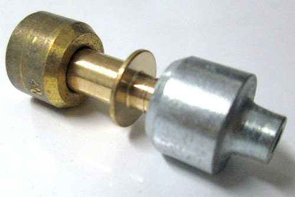

Основные неисправности и поломки компрессора холодильника
Признаки поломки
компрессора холодильника
Зачастую удобнее вызвать мастера на дом, оставив данные по модели и указав признаки поломки.
Мы работаем по всей Москве и Санкт-Петербургу, Московской и Ленинградской областям.
Ради ремонта холодильника вам нет необходимости отпрашиваться с работы и отменять привычные дела.
Наши профессионалы приедут с 7:00 до 23:00 в выходные и праздничные дни.
Знание первых признаков небольших поломок компрессора поможет пользователям в будущем предотвратить более крупную неисправность.
Вовремя вызванный мастер сбережет вашу технику и деньги.
Несоблюдение правил пользования и скачки в напряжении часто приводят к целому ряду последствий для компрессора:
- появился лед на стенках холодильника, особенно это касается холодильников No Frost;
- гудит компрессор, но не морозит, при этом не наблюдается утечка фреона;
- холодильник щелкает, дребезжит;
- из прибора доносятся посторонние звуки: шум и скрежет, сильная вибрация;
- компрессор работает без остановки;
- холодильник сильно переохлаждает.
Вовремя замеченные симптомы неполадки и ремонт в специализированном центре позволит ценной технике работать долго. В более запущенных случаях поможет только замена компрессора.
Компрессор холодильника работает,
но не морозит
Холодильник не охлаждает? Могла произойти протечка хладагента в результате нарушения правил транспортировки. Другие причины неисправности: выход из строя компрессора, охлаждающих ТЭНов или термостата.
Компрессор холодильника
работает без остановки
Бережное и внимательное отношение к бытовой технике позволит быстрее реагировать на неверную работу агрегатов. В особенности при разморозке холодильника или перебоях с напряжением. Если компрессор работает безостановочно, самым правильным решением будет вызвать опытного мастера.
К причинам такой проблемы можно отнести:
- Утечка хладагента, которая приводит к уменьшению фреона в морозильной камере. Зачастую такую проблему удается решить быстро и недорого.
- Компрессор постоянно работает — это связано с разгерметизацией капиллярной трубки и, как следствие, засором в системе.
- Рассохлась уплотнительная резинка, внутри невозможно достичь заданной температуры, в итоге мотор работает без остановки, чтобы поддерживать оптимальную температуру, и изнашивается.
Если ваш холодильник имеет инверторный компрессор, то после набора заданной температуры он продолжает работать на малых оборотах в режиме энергосбережения. Такая работа агрегата считается исправной. К такому типу холодильников можно отнести модели Samsung, LG.
Компрессор холодильника гудит,
но не запускается
Посторонний шум в работе нового холодильника часто связан с наличием транспортировочных болтов. Если вы имеете дело с новой техникой брендов Атлант или Beko, то необходимо проверить крепления на компрессоре. В случае если мотор гудит, но не запускается, то своевременное обращение к специалисту поможет решить проблему быстро и качественно:
Такое происходит при лопнувшем патрубке.
Сломан терморегулятор, мастера заменят деталь на дому.

Компрессор холодильника включается
и сразу выключается
Разные модели холодильников Bosch, Sharp, Gorenje, Siemens отличаются временем работы и простоя.
Это также зависит от температуры в помещении, наличия обогревательных приборов вблизи прибора, заданного температурного режима.
Если же компрессор холодильника включается и через несколько секунд выключается, то агрегат неисправен.
Холодильник исправен при работе в течение 11 минут и отдыха в пределах 15 минут, но 2 минуты работы через 15 простоя — показатель, далекий от нормы.
При такой работе прибор не достигает заданной температуры, что плохо сказывается на хранении продуктов, необходим ремонт холодильника на дому.
Основные неисправности холодильников в режиме работы:
Пускозащитное реле, которое защищает мотор от перегрузок, неисправно. Холодильник выключается, пользователи слышат щелчок. Нужна замена детали.
Вышел из строя электромотор: внутренняя обмотка оборвалась, требуется вызов специалиста..
Компрессор греется, вследствие того, что обмотка пускового реле обрывается, холодильник отключается. Деталь в данном случае уже не отремонтируешь. Стоимость замены зависит от модели..
Самостоятельная диагностика компрессора
Перед самостоятельной диагностикой компрессора необходимо выяснить причины, по которым двухкамерный холодильник работает во внештатном режиме.
Если дверца закрыта неплотно из-за объёмной тарелки или бутылки, то мотор может долго не отключаться.
Также проверяем уплотнительную резинку дверцы холодильника, возможно пришло время ее поменять.
В случае высокой температуры в помещении в летнее время особенно внимательно относимся к бытовой технике, обеспечивая необходимое кондиционирование.
Чтобы проверить компрессор своими руками, потребуется мультиметр для определения напряжения в электрической розетке.
Оно должно быть 200-220 ватт. При напряжении 195 ватт нормальное функционирование современного холодильника невозможно.
Компрессор находится за кожухом чаще всего в нижней части холодильника. Чтобы исследовать саму деталь, необходимо его извлечь и отсоединить реле компрессора.
Затем тестером измеряем сопротивление. Если ваши показания в пределах допустимых значений, то компрессор исправен,
в противном случае можно говорить о неисправности холодильников. Даже если понятна схема подключения, способы ремонта может подсказать только специалист.
Если вы никогда не сталкивались с ремонтом крупных бытовых приборов, то лучше обратиться в наш сервисный центр.
Специалисты произведут срочную диагностику и ремонт прибора. Особенно следует воздержаться от самостоятельного ремонта,
если вы пользователи холодильников премиум класса Liebherr и Vestfrost или обладатели бытового прибора с двумя компрессорами.
Ремонт или замена компрессора?
Производители отечественных холодильников Бирюса, Атлант используют поршневые компрессоры, их надежность зависит от подачи масла к движущимся деталям. Если масляный насос не обеспечивает нужного давления, то происходит износ подшипников. Всасывающий клапан неисправен, может произойти ваккумирование компрессора.
Если компрессор неисправен, то в большинстве случаев необходима полная замена агрегата. Теперь вопрос: как узнать, какой компрессор установлен? Чаще всего всю необходимую информацию производители приклеивают на сам компрессор. Сфотографируйте наклейку и обратитесь в специализированный магазин по продаже комплектующих к холодильникам. Цена компрессора колеблется от 6000 рублей в зависимости от модели холодильника и типа детали: линейный компрессор обойдется дешевле инверторного.
Звоните по телефону ниже!